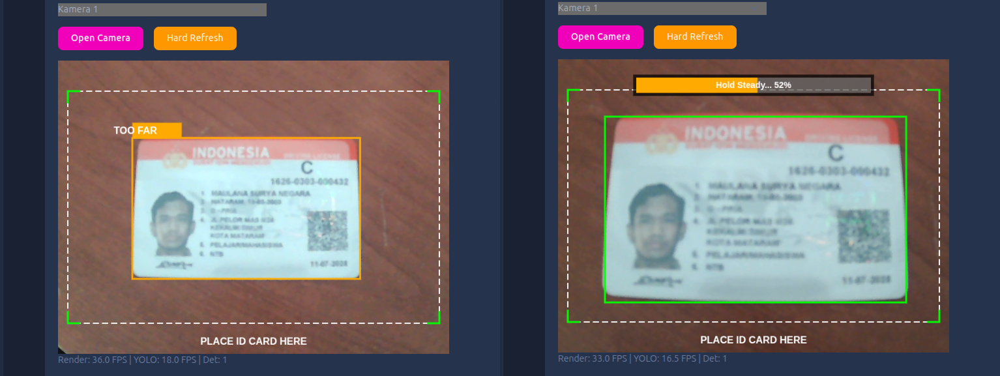
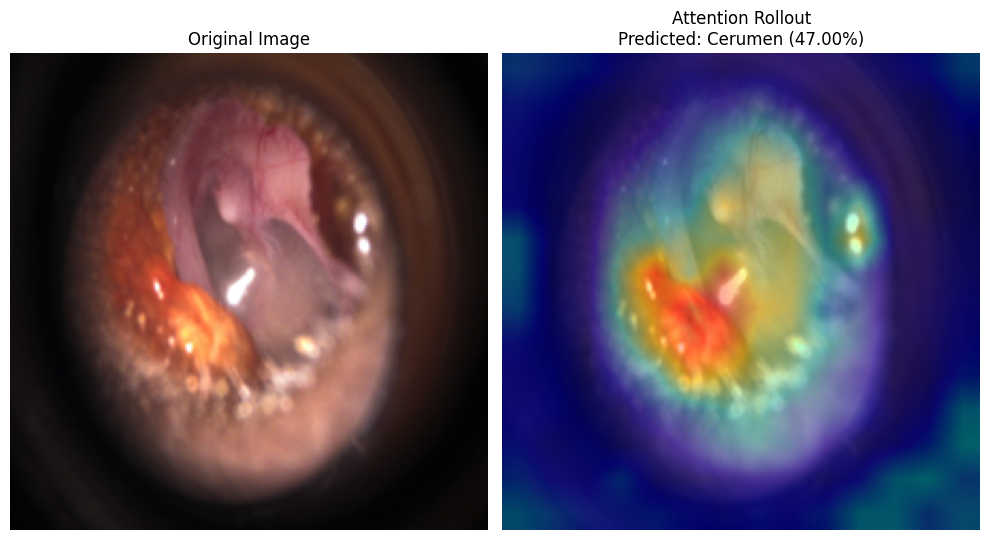
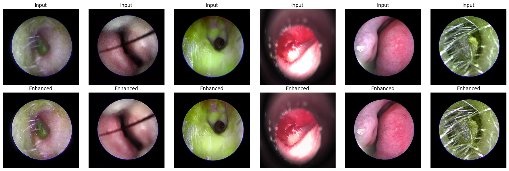
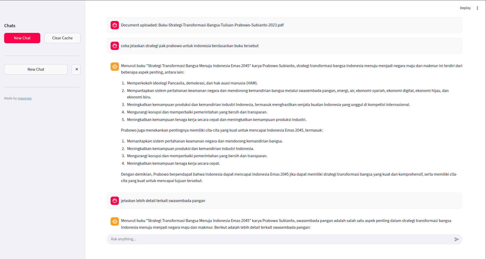
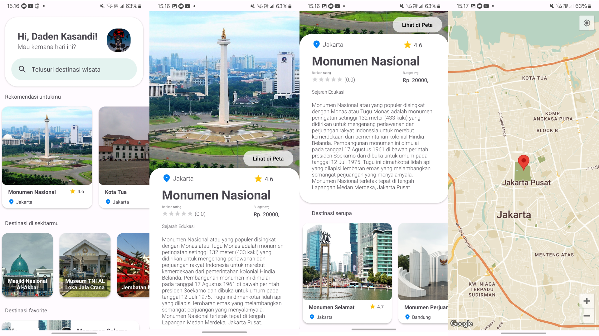

Engineering High-Performance Computer Vision & LLM Systems for Production.
Specializing in fine-tuning Vision Transformers (ViT), real-time on-device TFJS inference pipelines, structured LLM information extraction, and automated MLOps infrastructure with Docker and Apache Airflow.
Maulana Surya Negara
TensorFlow Certified Developer
Mataram, Nusa Tenggara Barat, Indonesia · Remote
Architecting Scalable Machine Learning Pipelines.
I engineer end-to-end ML solutions from deep neural network architecture design and fine-tuning to high-throughput inference APIs and automated CI/CD MLOps pipelines.
Computer Vision & LLMs
Foundational deep learning & transformer architectures
MLOps & Infrastructure
Orchestration, object storage, tracking & serving
Agentic AI & Retrieval
Context protocols, RAG, vector DBs & agent tooling
Production Track Record
At PT Hizrian Bersaudara Sukses, engineered automated MLOps pipelines cutting manual operational workload by ~80% and successfully deployed medical-grade classification models serving sub-300ms inference on CPU with 86% verified accuracy.
Engineering Experience & Track Record.
Demonstrated history across enterprise technical consulting, medical vision deployments, local LLM extraction, high-concurrency desktop systems, and academic lab leadership.
PT. Indonesia Global Solusindo (ISGS)
ACTIVE ROLEAssociate Technical Consultant
Driving enterprise technical consultancy, architectural system design, and AI-driven solutions across client enterprise ecosystems with focus on robustness, scalability, and seamless integration.
PT Hizrian Bersaudara Sukses
Machine Learning Engineer
- Developed and deployed Computer Vision models for ENT diagnosis using Google Vision Transformer (ViT-Base via Hugging Face/PyTorch), lifting diagnostic classification accuracy from 76% to 86% with 200–300 ms/image CPU inference via FastAPI and Docker.
- Built an on-device TFJS YOLOv5n auto-capture system paired with a Ministral-3 (Ollama) LLM-based OCR extractor with Pydantic structured output, achieving 15–27 s GPU inference and replacing fragile contour cropping with 100% structured JSON normalization.
- Architected automated MLOps pipelines utilizing Airflow, MLflow, MinIO, and Docker, cutting manual operational workload by ~80% and boosting lifecycle traceability and deployment stability.
PT Hizrian Bersaudara Sukses
Python Engineer
- Integrated pre-trained AI/ML models into a Tkinter-based desktop suite for real-time predictions and responsive multithreaded inference without UI freezing.
- Engineered MySQL database schemas and indexing for fast feature caching, batch I/O, and model-serving workflows.
- Hardened application security through hardware dongle-based access control and high-precision GPS acquisition locking satellite telemetry in <10 minutes.
Universitas Mataram
Supervised practical sessions and developed exercise curricula focusing on feature extraction using classical machine learning algorithms: KNN, SVM, and Random Forest.
Bangkit Academy (Google, GoTo, Traveloka)
Intensive machine learning track covering deep learning, TensorFlow ecosystem, model deployment, and collaborative capstone development.
Universitas Mataram
Instructed students in Object-Oriented Programming (OOP), Java Swing desktop graphical interfaces, multithreading synchronization, and JDBC database access.
OIA Universitas Mataram
Engineered and maintained international office web portal modules, modernizing information accessibility for foreign academic affairs and student exchanges.
Universitas Mataram
Bachelor of Computer Science (S1 Teknik Informatika)
Engineered Production & Research Systems.
Real-world deployed machine learning systems, deep neural network research, and conversational retrieval architectures.

Indonesian ID Card Extractor with Auto-Capture & LLM OCR
End-to-end KTP/SIM document processing system combining an on-device TFJS detector for real-time edge capture with a GPU-backed Ministral-3 LLM for structured OCR extraction. Replaced fragile contour cropping with 100% structured JSON normalization.

ENT Disease Classification with Vision Transformer (ViT)
Clinical-grade classification system classifying 12 distinct ear pathology conditions. Fine-tuned Google Vision Transformer Base, outperforming baseline DenseNet169 by +10% with attention rollout interpretability for otolaryngologists.

Pix2Pix GAN Endoscopic Image Enhancement
Adversarial reconstruction system for endoscopic video frames. Integrates soft self-attention gates in the U-Net skip connections to preserve critical vascular and mucosal textures while denoising glare and motion artifacts.
End-to-End MLOps Pipeline & Automation
Production infrastructure built at PT Hizrian Bersaudara Sukses. Orchestrates automated data validation, scheduled model re-training triggers, experiment tracking, and zero-downtime containerized inference endpoints for medical AI integration.

Ollama Local RAG Document Intelligence
Privacy-first Retrieval-Augmented Generation system with multi-session chat context and dynamic document chunking. Operates entirely on local hardware with zero external API telemetry.

TinyLlama Fine-Tuning & Quantization Pipeline
Low-parameter LLM optimization research utilizing parameter-efficient fine-tuning (PEFT) and bitsandbytes 8-bit quantization. Includes stateful conversation history buffering and FastAPI microservice packaging.
Research & Publications.
Peer-reviewed and applied scientific investigation in deep convolutional neural network architectures for visual demographic classification.
Implementasi Convolutional Neural Network pada Multi-label Classification Wajah Manusia Berdasarkan Usia, Gender, dan Ras
Research explores the design and training of a multi-label Convolutional Neural Network (CNN) architecture capable of concurrently predicting age group, gender, and racial demographics from single unconstrained facial images. Evaluated feature sharing across branches to minimize parameter footprint while optimizing loss balances across distinct demographic distribution skews.
Credentials & Industry Certifications.
Independently verified certifications across deep learning frameworks, specialized LLM fine-tuning, agentic workflows, and production system deployment.
TensorFlow Developer Certificate
Google / TensorFlow Program
Applied Machine Learning Specialist
Dicoding Indonesia
TensorFlow Specialization
DeepLearning.AI (Coursera)
Fine-Tuning LLMs (Hugging Face)
Udemy / NLP Transformers
Production ML Deployment
FastAPI & Docker Containerization
Agentic AI Projects: FastAPI, MCP, AWS Deploy & Gemini
Model Context Protocol · Gemini · AWS
Crash Course on Python
Google Career Certificates (Coursera)
Introduction to Git and GitHub
Google Career Certificates (Coursera)
Google Data Analytics
Google Professional Certificate
Let's Build Robust ML Systems Together.
Whether you need production-grade computer vision pipelines, fine-tuned transformer architectures, or automated MLOps infrastructure — let's connect.